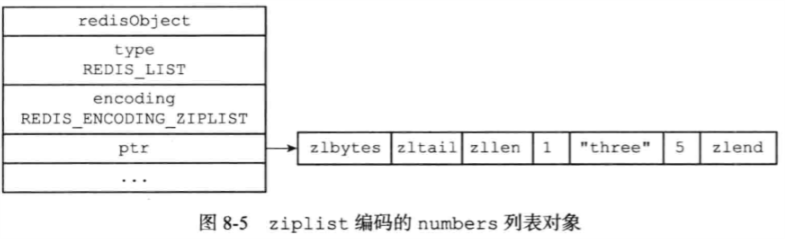
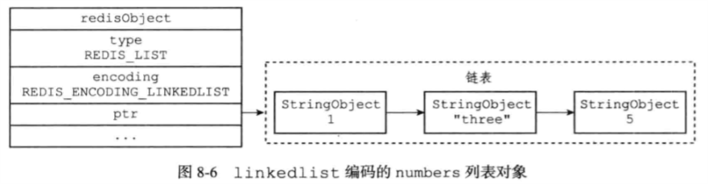

Redis设计与实现笔记七
对象
Redis构建了一个对象系统，包含字符串、列表对象、哈希对象、集合对象和有序集合对象这五种类型的对象
Redis可以在执行命令前，根据对象的类型判断一个对象是否可以执行给定的命令。可以针对不同的使用场景，为对象设置多种不同的数据结构实现，从而优化对象在不同场景下的使用效率。
Redis对象系统实现基于引用计数技术的内存回收机制，还可以通过引用计数技术实现了对象共享机制，通过让多个数据库键共享同一个对象来节约内存
Redis对象带有访问时间记录信息，该信息可以用于计算数据库键的空转时长，在服务器启用了maxmemory功能情况下，空转时长较长的那些键可能会优先被服务器删除
对象的类型与编码
Redis使用对象来表示数据库中的键和值，新创建一个键值对的时候，会创建两个对象，一个用于键一个用于值。
每个对象都由一个redisObject结构表示，
1 | /* The actual Redis Object */ |
- type属性记录了对象的类型，键总是一个字符串对象；值可以是字符串对象、列表对象、哈希对象、集合对象或者有序集合对象，当对一个数据库键执行TYPE命令时候，返回的是值对象类型
- 对象的ptr指针指向对象的底层实现数据结构，而这个数据结构又对象的enconding属性决定
enconding属性记录了对象所使用的编码：
每种类型对象都至少使用了两种不同的编码：
根据不同的使用场景为一个对象设置不同的编码，从而优化对象在某一场景下的效率
字符串对象
字符串对象编码可以是int、raw、embstr
如果一个字符串对象保存的是整数值，并且这个整数值可以用long类型来表示，那么字符串对象会将整数值保持在字符串对象结构的ptr属性里面（将void*转换为long），并将字符串对象编码设置为int
如果字符串对象保存的是一个字符串值，并且这个字符串值的长度大于32字节，那么字符串对象将使用一个简单动态字符串（SDS）来保存这个字符串值，并将对象的编码设置为raw
如果保存的字符串长度小于等于32字节。用embstr编码保存，专门用于保存短字符串，这种编码和raw编码一样，都使用redisObject结构和sdshdr结构来表示字符串对象，但是raw编码会调用两次内存分配函数分别创建redisObject结构和sdshdr结构，而embstr编码则通过调用一次内存分配函数分配一块连续空间，空间中依次包含redisObject和sdshdr两个结构
可以用long double类型表示的浮点数在Redis中也是作为字符串值保存
int编码的字符串对象和embstr编码的字符串对象在条件满足的情况下，会被转换为raw编码
列表对象
编码可以是ziplist或者linkedlist


编码转换：当列表对象同时满足以下两个条件，使用ziplist编码
- 保存的所有字符串元素的长度都小于64字节
- 列表对象保存的元素数量小于512个
可以在配置文件中list-max-ziplist-value和list-max-ziplist-entries配置
哈希对象
编码可以是ziplist或者hashtable
ziplist编码的哈希对象使用压缩列表作为底层实现，每当有新的键值对要加入到哈希对象时候，程序会将保存了键的压缩列表节点推入到压缩列表表尾，然后将保存了值的压缩列表节点推入到压缩列表表尾，因此：
- 保存了同一个键值对的两个节点总是紧挨在一起，保存键的节点在前，保存值的节点在后
- 先添加到哈希对象中的键值对会被放在压缩列表的表头方向，后来添加的放在表尾方向
hashtable编码的哈希对象使用字典作为底层实现，哈希对象中的每个键值对都使用一个字典键值对保存
编码转换，当哈希对象同时满足：
- 保存的所以键值对的键和值的字符串长度都小于64字节
- 保存的键值对数量小于512个
使用ziplist编码，否则编码转化为hashtable
集合对象
编码可以是intset或者hashtable
hashtablw编码的集合对象使用字典作为底层实现，字典的每个键都是一个字符串对象，每个字符串对象包含了一个集合元素，而字典的值则全部被设置为NULL
编码转换，当满足：
- 集合对象保存的所有元素都是整数值
- 保存元素数量不超过512
使用intset编码，否则使用hashtable
有序集合对象
编码可以是ziplist或者skiplist
ziplist编码的压缩列表对象使用压缩列表作为底层实现，每个集合元素使用两个紧挨在一起的压缩列表节点来保存，第一个节点保存元素的成员，而第二个元素保存元素的分值，压缩列表内的集合元素按分值从小到大进行排序，分值较小的元素被放置在靠近表头的方向，而分值较大的元素则被放置在靠近表尾方法
skiplist编码的有序集合对象使用zset结构作为底层实现，一个zset结构同时包含一个字典和一个跳跃表，zset结构中的zsl跳跃表按分值从小到大保存了所有集合元素，通过跳跃表可以进行范围型操作比如ZRANK、ZRANGE等，dict字典为有序集合创建了一个从成员到分值的映射，可以用O（1）查找给定成员的分值
类型检查与命名多态
命令可以分为两种类型，一种命令可以对任何类型的键执行，比如DEL、EXPIRE、RENAME、TYPE、OBJECT等
另一种只能对特定类型的键执行，比如SET只能对字符串键执行，HSET只能对哈希键执行
类型检查的实现
为了确保只有指定类型的键可以执行某些特定的命令，在执行一个类型特定的命令之前，Redis会先检查输入键的类型是否正确，然后再决定是否执行给定的命令
多态命令实现
根据值对象的编码方式，选择正确的命令实现代码执行命令
内存回收
跟踪对象的引用计数信息，在适当的时候自动释放对象并进行内存回收
对象共享
Redis会在初始化服务器时，创建一万个字符串对象，这些对象包含了从0到9999的所以整数值，当服务器需要用到值为0到999的字符串对象时，服务器就会使用这些共享对象，而不是新创建对象
Redis只对包含整数值的字符串对象进行共享
对象的空转时长
redisObject结构包含的lru属性，记录了对象最后一次被命令程序访问的时间


原文作者: Yang Peng
原文链接: http://ylovex.cn/2019/07/13/Redis设计与实现笔记七/
版权声明: 转载请注明出处(必须保留作者署名及链接)